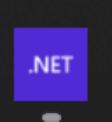

Badge
The Badge API allows developers to set the app icon badge number on the home screen.

The following preconditions are required in order to use the Badge API:
Additional configuration required to support Android devices. See Android section below.
Syntax
C#
The Badge API can be used as follows in C#:
void SetCount(uint value)
{
Badge.Default.SetCount(value);
}
Methods
| Method | Description |
|---|---|
| SetCount | Set the badge count. |
Dependency Registration
If you would like to make use of the built-in dependency injection layer within .NET MAUI, then you will need to first register the Badge implementation inside your MauiProgram.
Update MauiProgram.cs with the next changes:
public static class MauiProgram
{
public static MauiApp CreateMauiApp()
{
var builder = MauiApp.CreateBuilder();
builder
.UseMauiApp<App>()
.UseMauiCommunityToolkit();
builder.Services.AddSingleton<IBadge>(Badge.Default);
return builder.Build();
}
}
Now you can inject the service like this:
public partial class MainPage : ContentPage
{
private readonly IBadge badge;
public MainPage(IBadge badge)
{
InitializeComponent();
this.badge = badge;
}
public void SetCount(uint value)
{
badge.SetCount(value);
}
}
Examples
You can find an example of the Badge API in action in the .NET MAUI Community Toolkit Sample Application.
API
You can find the source code for the Badge API over on the .NET MAUI Community Toolkit GitHub repository.
Android
Warning
Due to the diverse landscape of Android device manufacturers and launchers, please be aware there may be unpredictable variations in how app badge counts are displayed or not displayed on different devices.
In the world of Android, one size rarely fits all. This principle holds true when it comes to setting application badge counts, due to the lack of a standardized API provided by Android system for this functionality.
Different Android launchers have chosen to implement badge counts in their unique way. Most launchers including popular ones like Nova Launcher, Microsoft Launcher, etc., have their specific methods to handle this feature.
Consequently, to ensure that your application's badge notifications appear correctly across these diverse launchers, you must resort to programming specific code implementations for each launcher. This means adapting your code to the specific requirements of each launcher's unique badge count-indicating mechanism.
Consider it as a hurdle that developers must overcome, in the path towards achieving a universal application experience. This is due to Android's flexible ecosystem that encourages diversity and customization.
It's important to note that while it's feasible to cover the most popular Android launchers, it would be almost impossible to cater to every single one, given the sheer number of launchers available in the market.
With the CommunityToolkit we provide you the way implement your own badge counter logic for providers you want to support. This is how you can do that:
- Implement the
CommunityToolkit.Maui.ApplicationModel.IBadgeProviderinterface. SeeSamsungBadgeProviderimplementation as example: SamsungBadgeProvider. - In the Android
MainApplicationconstructor set the launcher identifier to yourIBadgeProviderimplementation". For example the Samsung launcher would look like this:
public MainApplication(IntPtr handle, JniHandleOwnership ownership)
: base(handle, ownership)
{
var samsungProvider = new SamsungBadgeProvider();
BadgeFactory.SetBadgeProvider("com.sec.android.app.launcher", samsungProvider);
BadgeFactory.SetBadgeProvider("com.sec.android.app.twlauncher", samsungProvider);
}
- Add the required permissions to the
AndroidManifest.xaml. For example the Samsung launcher would look like this:
<uses-permission android:name="com.sec.android.provider.badge.permission.READ" />
<uses-permission android:name="com.sec.android.provider.badge.permission.WRITE" />
These changes are enough for your application to run on an Android based Samsung device and correctly update the app icons badge number. It also gives you a starting point and guide as to how you could start implementing support for other launchers within your application.
Therefore, while our code aims to provide an ideal implementation, there may be instances where Android will not behave as expected.
We strongly recommend thoroughly testing your app on a range of devices and launchers for the most accurate assessment of how app badge notifications behave in your specific use case.